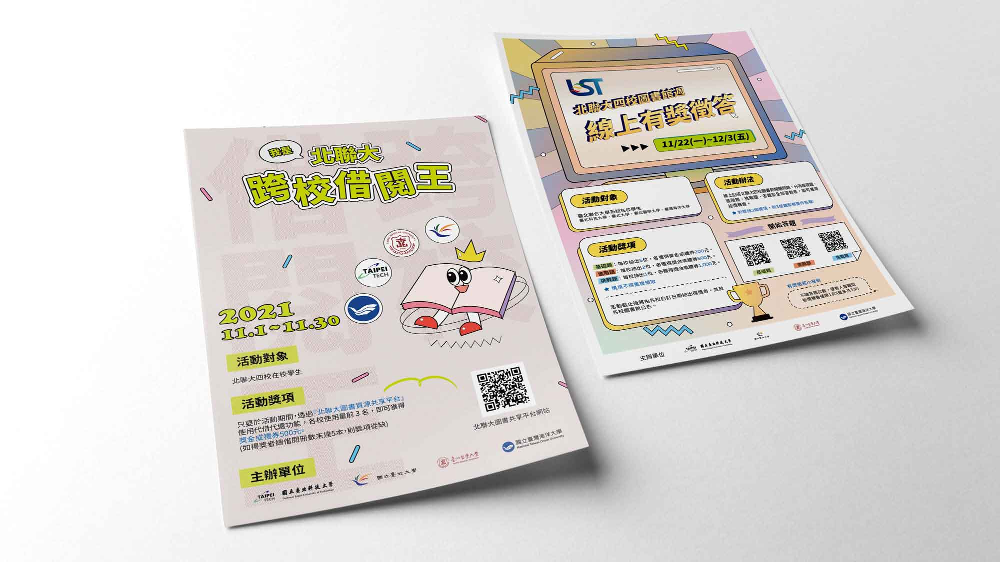

台北聯合大學(北大、北科、北醫、海大)圖書館週的活動海報設計，分別為「北聯大跨校借閱王」及「線上有獎徵答」，根據主題的不同，在風格上也做了不同的嘗試。
使用工具/軟體
- Adobe Illustrator
- Adobe Photoshop
設計理念
想給人年輕、有活力的感覺，因此在兩者的排版和設計上都讓物體邊緣帶邊線，使構圖卡通化，同時也更活潑，而配色的部分在「北聯大跨校借閱王」活動的部分，僅使用兩種顏色作主色，風格更為精簡；在「線上有獎徵答」的活動，則是想在現代與復古間找尋平衡，配色使用低飽和度的暖色調，並使用漸層色增加活潑的氣息。